NSysS 2025, ACM
Co-author on an explainable conversational AI framework, published at an ACM international conference.
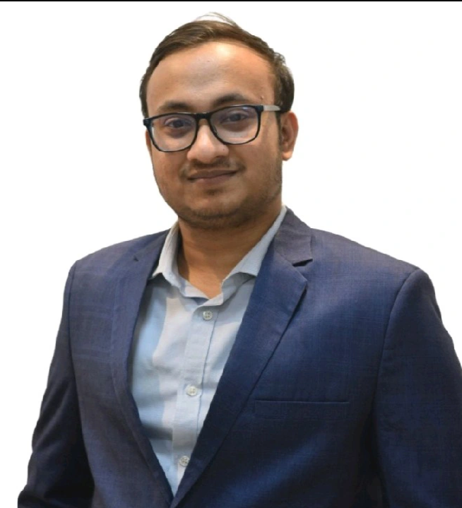
AI Researcher · ML Engineer · Healthcare AI · LLMs · Network Security
Recent CSE graduate from UIU with research experience in healthcare AI, medical imaging, deep learning, speech processing, and large language models. Published author at NSysS 2025, thesis Champion for voice reconstruction in stroke patients, and builder of award-winning clinical prototypes.
Co-author on an explainable conversational AI framework, published at an ACM international conference.
Voice reconstruction from lip movements for stroke patients, UIU Final Year Design Project.
DigiDignityAI-integrated blockchain identity framework for displaced populations.
Seeking research assistant and internship opportunities in healthcare AI and secure ML systems.
Background, research focus, and collaboration interests.
I recently graduated in Computer Science and Engineering from United International University, and along the way I got pulled into research across healthcare AI, medical imaging, deep learning, speech and audio processing, and large language models.
For my undergraduate thesis, I worked on reconstructing voice for stroke patients using visual lip movements, bringing together computer vision and signal processing to push assistive communication technology forward. That project ended up winning Champion at the UIU Final Year Design Project competition, which was a genuinely proud moment for me.
Outside of the thesis, I like building applied ML systems. One project turns network traffic into audio and runs it through a dual-branch neural network for intrusion detection. Another is an AI-integrated blockchain identity framework aimed at helping displaced populations, which was named a National Finalist at Blockchain Olympiad 2025.
I've also published three open datasets on IEEE DataPort and Figshare: BDRoadScenes (multi-class vehicle detection), WasteSegCluster (annotated urban waste images from Bangladesh's water bodies), and BdWaterSurfaceSet (inland water-surface satellite imagery). All of it is indexed on my ORCID profile.
Organized by theme click any card to explore details, visuals, and slides.
Assistive AI for speech recovery, disease screening, and satellite/medical imaging benchmarks.
Deep learning pipeline for visual speech reconstruction using computer vision and signal processing, evaluated against healthcare-grade benchmarks. Won Champion at UIU's Final Year Design Project competition.
Benchmarking ViT, DeiT, Swin-Tiny, and ConvNeXt-Tiny on a curated Bangladesh inland water-surface satellite imagery dataset.
Explainable, multi-agent conversational systems for real-world decision support.
Ensemble learning pipeline paired with a conversational AI interface to explain compost maturity predictions for field users.
Data-driven detection of intrusions and web vulnerabilities using deep learning and signal-based representations.
A dual-branch neural network converting tabular network flow data into synthetic audio waveforms for intrusion detection, evaluated across NSL-KDD, CIC-IDS2017, and UNSW-NB15.
A dataset of over one million SQL injection samples spanning diverse attack categories, supporting automated ML-based detection frameworks.
Publicly released, DOI-indexed datasets supporting vehicle detection, waste segmentation, and water surface monitoring in Bangladesh. All verified on ORCID.
Real-world dataset for multi-class vehicle detection on Bangladeshi roads, supporting computer vision and autonomous driving research in South Asian traffic conditions.
Annotated dataset of waste images collected from urban water bodies in Bangladesh, supporting segmentation and classification research for environmental monitoring and cleanup initiatives.
Satellite imagery benchmark for automated inland water-surface detection across Bangladesh. Benchmarks ViT, DeiT, Swin-Tiny, and ConvNeXt-Tiny on this geographically critical task.
Selected research software and award-winning prototypesclick any card to explore.
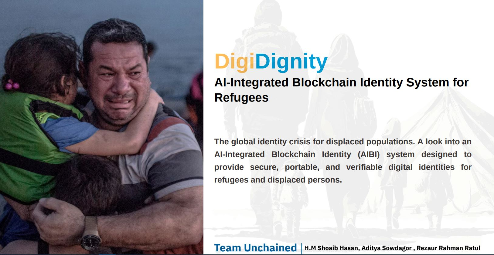
Blockchain + AI identity framework giving secure, portable, verifiable digital IDs to 100M+ displaced peoplefree for refugees, funded by institutional partners. Features SSI, dual-chain architecture, 99.7%-accurate AI biometrics, and Zero-Knowledge Proofs.
Results: National FinalistBlockchain Olympiad Bangladesh 2025.
Technologies: Dual-Chain Blockchain, AI/ML Biometrics, Zero-Knowledge Proofs, Self-Sovereign Identity (SSI)
View details & slides
Gesture and voice-controlled wheelchair integrating pulse monitoring, fall detection, obstacle avoidance, and medication reminders.
Results: 1st Runner-up, UIU Electronics Lab Competition.
Technologies: Embedded systems, IoT sensors, Computer vision, Raspberry Pi
View award photos & slides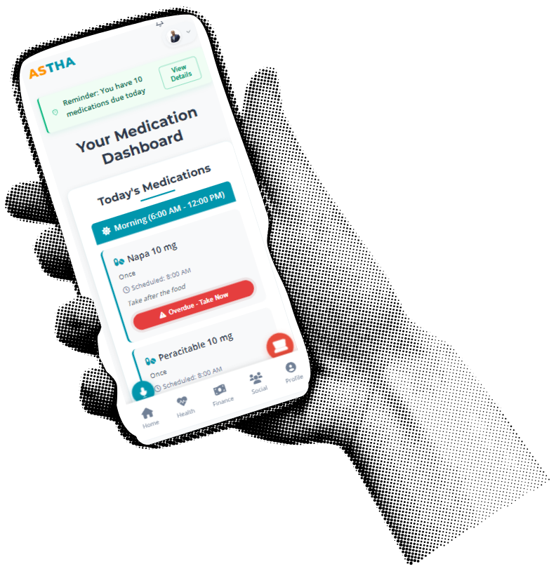
End-to-end healthcare app tracking blood pressure, heart rate, health records, caregiver alerts, and early risk detection.
Results: 1st Runner-up, UIU System Analysis Design Lab Competition.
Technologies: Machine learning, Healthcare AI, Python
View award photos & slides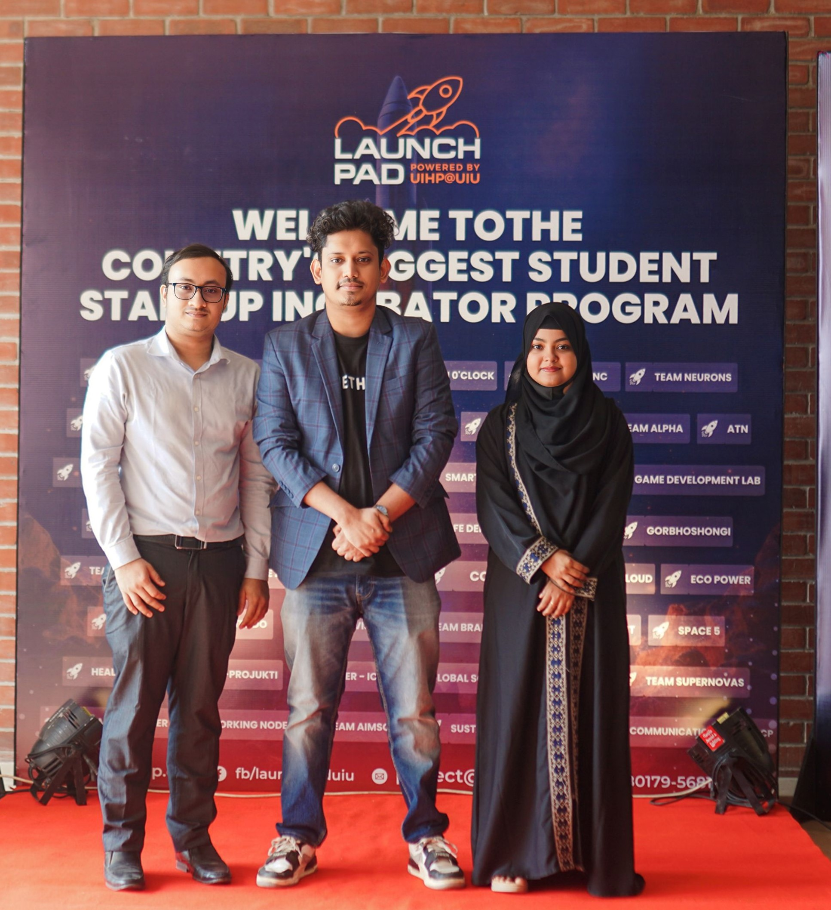
Prototype CCTV-based child monitoring solution for daycare centers, leading system planning and validation for real-time supervision.
Results: Top 4 nationally, University Innovation Hub Program20,000 BDT award.
Technologies: Computer vision, Embedded systems
View award photos & slidesDual-branch Wav2Vec2 + ResNet-18 architecture converting network flow data into synthetic audio for intrusion detection, targeting IEEE S&P.
Technologies: PyTorch, Wav2Vec2, Signal processing, Python
View details & slidesOpen dataset of annotated waste images from urban water bodies in Bangladesh, supporting segmentation and environmental AI research.
Results: Published on Figshare · DOI: 10.6084/m9.figshare.31878643
Technologies: Image segmentation, PyTorch, Computer vision
View details & datasetReal-world vehicle detection dataset from Bangladeshi roads for computer vision and autonomous driving research in South Asian conditions.
Results: Published on IEEE DataPort · DOI: 10.21227/DH1A-4C18
Technologies: Computer vision, Object detection, Annotation
View details & datasetLarge-scale (1M+ sample) SQL injection dataset spanning diverse attack patterns to support ML-based vulnerability detection.
Technologies: Python, SQL, Security analytics
View detailsLaravel platform for agricultural analysis, crop recommendation, weather monitoring, and data-driven land planning.
Technologies: Laravel, PHP, SQL, JavaScript
View detailsPrograms, mentors, and open positions.
Nov 2024 – Mar 2025
Founding member of SHOHOCHOR, a CCTV-based child monitoring prototype for daycare centersTop 4 nationally, 20,000 BDT award.
Core toolkit across research, engineering, and applied AI.
Competition placements and recognitions.
Moments from competitions, award ceremonies, and project showcases.
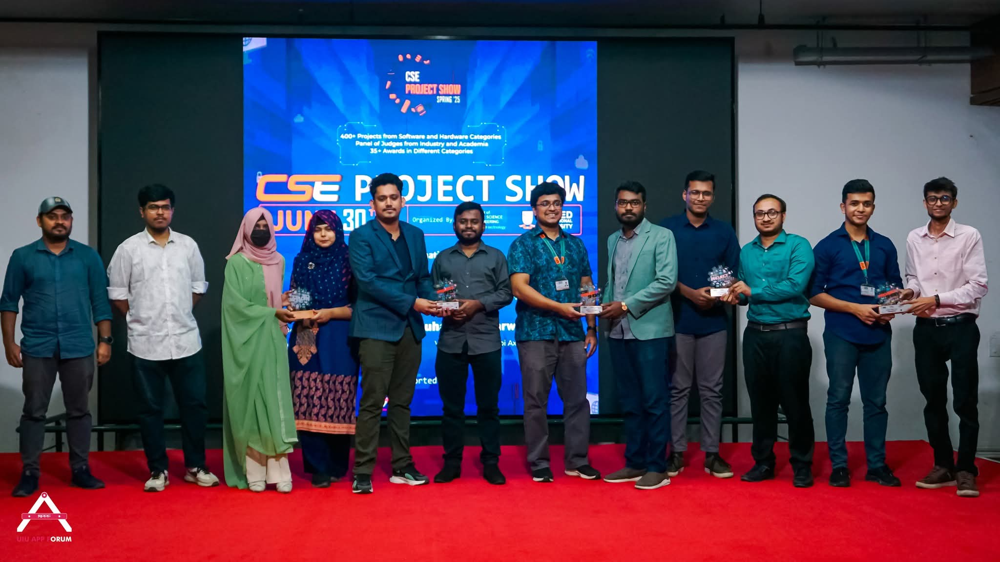
ChampionFinal Year Design Project, UIU

Award CeremonyIntelliSense Smart Wheelchair
Project DemoIntelliSense Smart Wheelchair
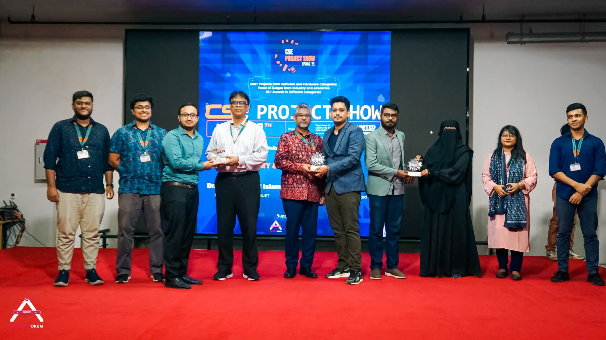
1st Runner-upSystem Analysis Design Lab (Astha)

UIHP LaunchpadNational Top 4
SHOHOCHOR Team at UIHP Launchpad
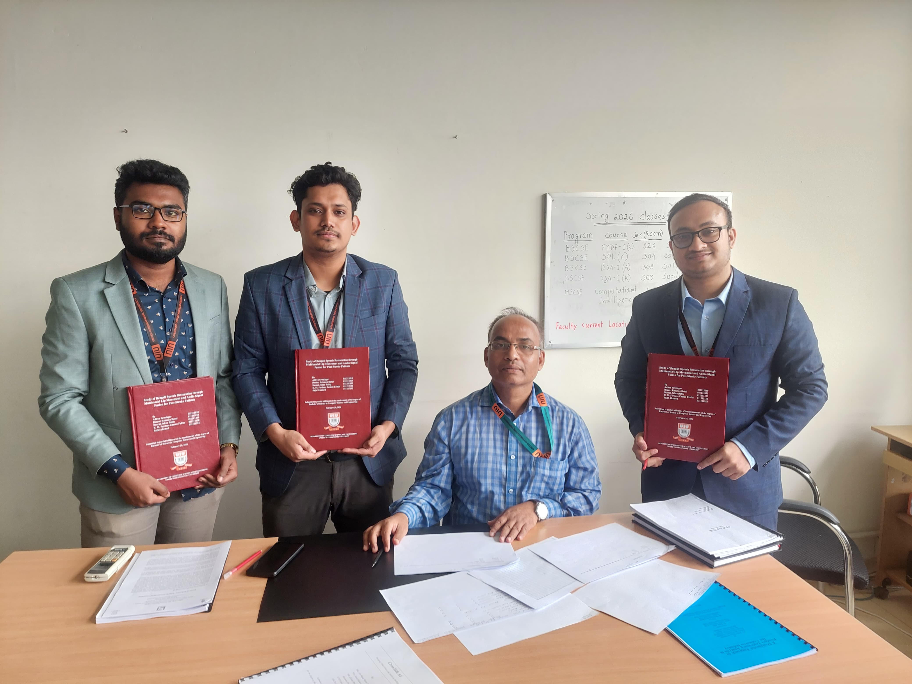
Research Team with Thesis Supervisor
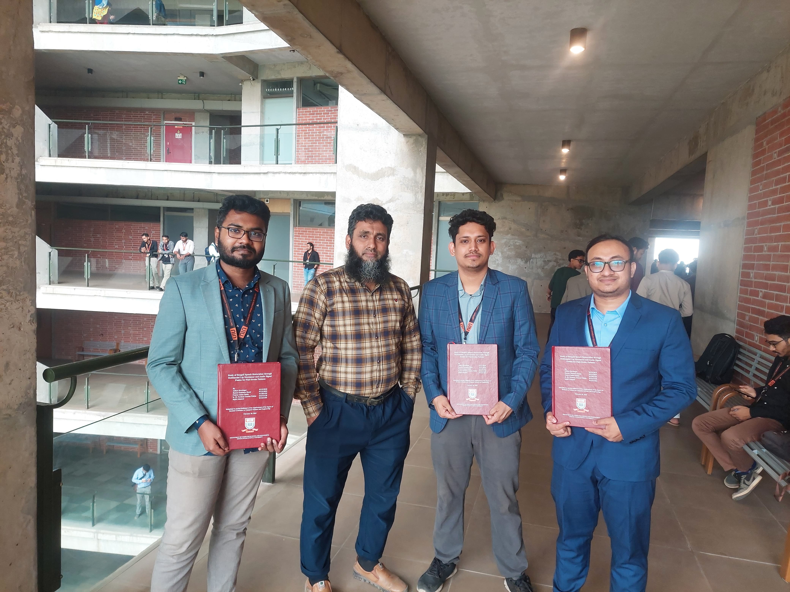
Research Team with Co-supervisor
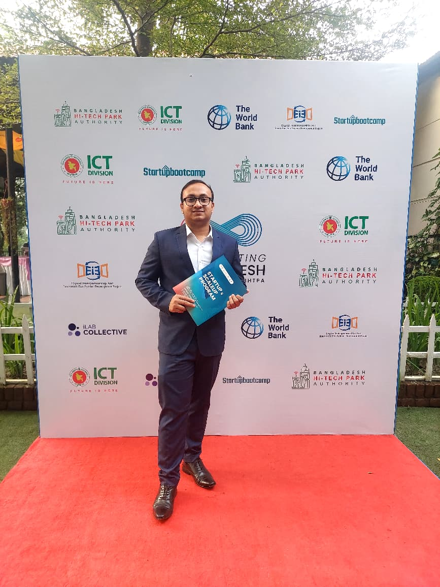
Accelerating Bangladesh Innovation Event
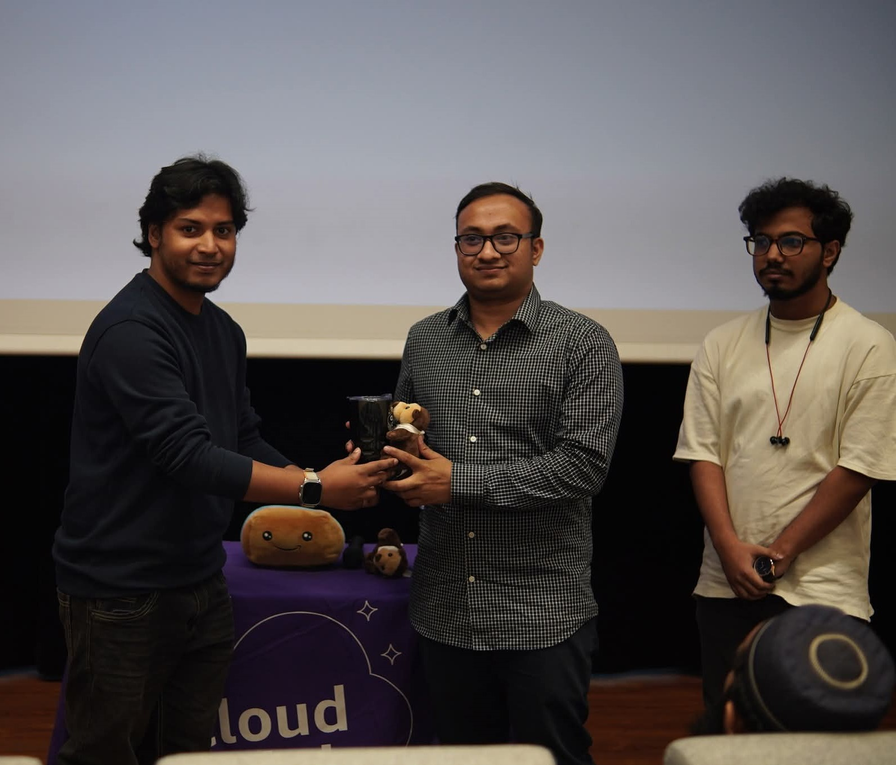
AWS Seminar Recognition
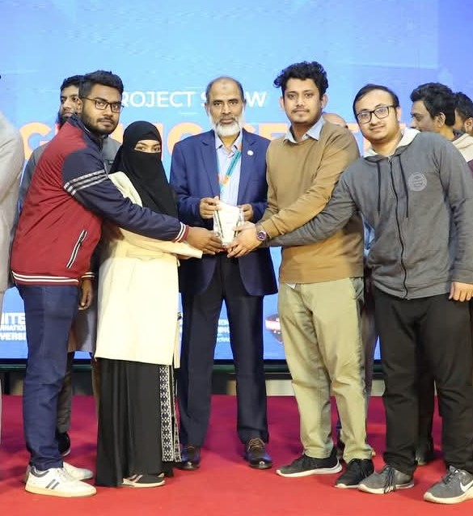
Microprocessor Lab Competition
Preview or download my current resume.
Reach out for research collaborations, the UIU IAR role, or any inquiry.